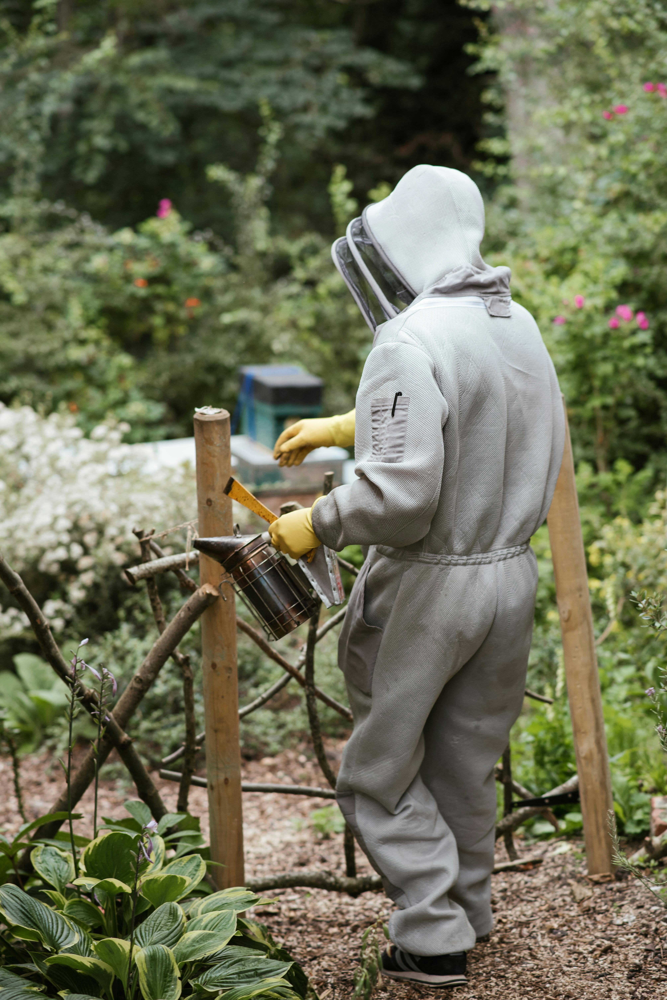

A YEAR IN THE APIARY – APRIL
As spring begins to fully take hold, the activities in the apiary begin to increase. April is a critical month as it marks the start of the nectar flow season, which is essential for the bees' survival throughout the year. The warmer temperatures and longer days mean that the bees become more active, and it's important to ensure the hives are prepared for the busy season ahead. Keep a close eye on the colonies, checking for signs of swarming, and continuing to monitor the hive's health. Learn more about seasonal hive management.
Ensure the hive is clean and free of debris that may have accumulated during the winter months. Replace any damaged or old combs and frames to ensure the colony has sufficient space to grow. Finally, take steps to encourage the bees to collect nectar and pollen, such as planting flowers and providing sugar syrup as a supplemental food source. By taking these steps in April, you can ensure the hives are healthy and prepared for the busy season ahead.
Inspect Hives: April is a key month for inspecting your hives when temperatures are above 15°C. With the warmer weather, the queen will start to lay more eggs. Ensure the brood chamber is healthy and the colony has enough space to expand. If the temperature permits, shake off the bees and inspect each frame for signs of disease or pests. Add boxes or frames as needed.
Inspect every 7–9 days to monitor for disease, check for signs of swarming, assess the queen’s status, evaluate brood patterns, and review food stores. This timeframe is crucial, as it takes about 9 days for bees to produce and cap a queen cell and decide to swarm. Now is also a good time to replace old, dark frames. If you get the opportunity, mark the queen—she will be easier to find later. See our equipment guide for help with frames and hive tools.
Feeding: If your hives lack honey stores, April is a good time to provide light sugar syrup. Feeding stimulates the colony and increases the queen’s egg-laying rate. It also helps the bees strengthen the colony in time for the nectar flow.
Swarm Control: The risk of swarming increases as brood production rises. Perform an artificial swarm to prevent colony loss. This technique mimics natural swarming in a controlled way:
- • Identify swarming signs: Look for queen cells
- • Split the colony: Move the queen and some bees to a new hive or nucleus box
- • Manage the original hive: Leave brood and queen cells to raise a new queen
- • Balance resources: Ensure both hives have enough bees, brood, and food
This method helps control swarming while maintaining strong colonies and honey production. Alternatively, use swarm traps to catch departing bees or to expand your colony.
Queen Rearing: April is a good time to begin raising your own queens. Graft larvae from strong colonies into queen cups, or use a queenless colony to produce a queen cell builder.
Practice Good Apiary Hygiene: Regularly clean and disinfect equipment, remove debris from hives, and avoid cross-contamination. Good hygiene reduces disease spread and keeps bees strong. See our page on Bee Hygiene for more tips.
Undertake Varroa Counts: Monitor Varroa mite levels. Regular counts help you determine if treatment is needed before infestation gets out of control.
Use MAQS if Required: If mite levels are high, apply MAQS (Mite Away Quick Strips). These contain formic acid and must be used according to instructions for safe, effective Varroa control.
Super Up: When bees cover 7 of the 10 frames, add a super. This gives them space to store honey and prevents overcrowding, reducing swarming risk.
Remove Supers for Extraction: If your supers are full—especially if bees forage on oilseed rape—extract promptly to avoid crystallisation.
Unite Weak Colonies: If you have weak colonies, consider uniting them with stronger ones. This strengthens the hive and increases chances of survival.
Maintain Records: Keep accurate records of hive inspections, queen status, treatments, and honey stores. Good records help you make informed decisions throughout the season.
Attend Educational Events: April is a great time to expand your knowledge. Join seminars, webinars, or local association meetings to stay updated on best practices and new research.